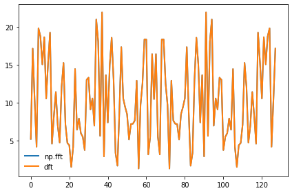
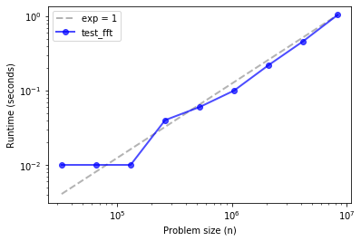
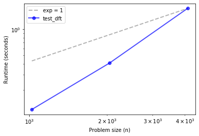
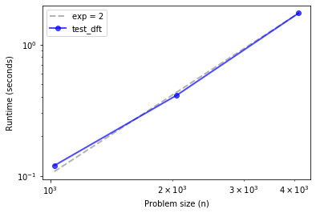
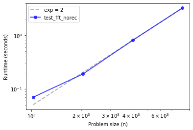
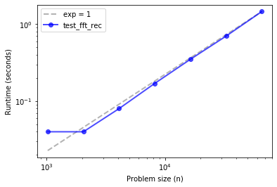

FFT#
Code examples from Think Complexity, 2nd edition.
Copyright 2017 Allen Downey, MIT License
%matplotlib inline
import matplotlib.pyplot as plt
import networkx as nx
import numpy as np
import seaborn as sns
from utils import decorate
Empirical order of growth#
Sometimes we can figure out what order of growth a function belongs to by running it with a range of problem sizes and measuring the run time.
order.py contains functions from Appendix A we can use to estimate order of growth.
from order import run_timing_test, plot_timing_test
DFT#
Here’s an implementation of DFT using outer product to construct the transform matrix, and dot product to compute the DFT.
PI2 = 2 * np.pi
def dft(xs):
N = len(xs)
ns = np.arange(N) / N
ks = np.arange(N)
args = np.outer(ks, ns)
M = np.exp(-1j * PI2 * args)
amps = M.dot(xs)
return amps
Here’s an example comparing this implementation of DFT with np.fft.fft
xs = np.random.normal(size=128)
spectrum1 = np.fft.fft(xs)
plt.plot(np.abs(spectrum1), label='np.fft')
spectrum2 = dft(xs)
plt.plot(np.abs(spectrum2), label='dft')
np.allclose(spectrum1, spectrum2)
decorate()

Now, let’s see what the asymptotic behavior of np.fft.fft looks like:
def test_fft(n):
xs = np.random.normal(size=n)
spectrum = np.fft.fft(xs)
ns, ts = run_timing_test(test_fft)
plot_timing_test(ns, ts, 'test_fft', exp=1)
1024 0.0
2048 0.0
4096 0.0
8192 0.0
16384 0.0
32768 0.010000000000000009
65536 0.010000000000000009
131072 0.010000000000000009
262144 0.040000000000000036
524288 0.060000000000000275
1048576 0.09999999999999964
2097152 0.2200000000000002
4194304 0.45999999999999996
8388608 1.04

Up through the biggest array I can handle on my computer, it’s hard to distinguish from linear.
And let’s see what my implementation of DFT looks like:
def test_dft(n):
xs = np.random.normal(size=n)
spectrum = dft(xs)
ns, ts = run_timing_test(test_dft)
plot_timing_test(ns, ts, 'test_dft', exp=1)
1024 0.1200000000000001
2048 0.41000000000000014
4096 1.7300000000000004

Definitely not linear. How about quadratic?
plot_timing_test(ns, ts, 'test_dft', exp=2)

Looks quadratic.
Implementing FFT#
Ok, let’s try our own implementation of FFT.
First I’ll get the divide and conquer part of the algorithm working:
def fft_norec(ys):
N = len(ys)
He = dft(ys[::2])
Ho = dft(ys[1::2])
ns = np.arange(N)
W = np.exp(-1j * PI2 * ns / N)
return np.tile(He, 2) + W * np.tile(Ho, 2)
This version breaks the array in half, uses dft to compute the DFTs of the halves, and then uses the D-L lemma to stich the results back up.
Let’s see what the performance looks like.
def test_fft_norec(n):
xs = np.random.normal(size=n)
spectrum = fft_norec(xs)
ns, ts = run_timing_test(test_fft_norec)
plot_timing_test(ns, ts, 'test_fft_norec', exp=2)
1024 0.07000000000000028
2048 0.1899999999999995
4096 0.8099999999999987
8192 3.25

Looks about the same as DFT, quadratic.
Exercise: Starting with fft_norec, write a function called fft_rec that’s fully recursive; that is, instead of using dft to compute the DFTs of the halves, it should use fft_rec. Of course, you will need a base case to avoid an infinite recursion. You have two options:
The DFT of an array with length 1 is the array itself.
If the parameter,
ys, is smaller than some threshold length, you could use DFT.
Use test_fft_rec, below, to check the performance of your function.
# Solution
def fft_rec(ys):
N = len(ys)
if N == 1:
return ys
He = fft_rec(ys[::2])
Ho = fft_rec(ys[1::2])
ns = np.arange(N)
W = np.exp(-1j * PI2 * ns / N)
return np.tile(He, 2) + W * np.tile(Ho, 2)
xs = np.random.normal(size=128)
spectrum1 = np.fft.fft(xs)
spectrum2 = fft_rec(xs)
np.allclose(spectrum1, spectrum2)
True
def test_fft_rec(n):
xs = np.random.normal(size=n)
spectrum = fft_rec(xs)
ns, ts = run_timing_test(test_fft_rec)
plot_timing_test(ns, ts, 'test_fft_rec', exp=1)
1024 0.040000000000000924
2048 0.03999999999999915
4096 0.08000000000000007
8192 0.16999999999999993
16384 0.34999999999999964
32768 0.7000000000000011
65536 1.4600000000000009

If things go according to plan, your FFT implementation should be faster than dft and fft_norec, but probably not as fast as np.fft.fft. And it might be a bit steeper than linear.